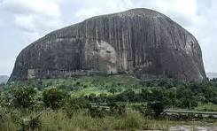

Popular Tourist Centers in Abuja

Zuma Rock
Known as the 'Gateway to Abuja', Zuma Rock is an iconic natural landmark offering breathtaking views and a rich history.
 Abuja National Mosque
Abuja National Mosque
An architectural marvel and religious center, the Abuja National Mosque is a serene place with beautiful decor and stunning domes.
 Aso Rock
Aso Rock
A prominent rock formation, Aso Rock is a major landmark located close to the Nigerian presidential complex.
 Millennium Park
Millennium Park
The largest public park in Abuja, Millennium Park is perfect for relaxation, picnics, and enjoying nature in the heart of the city.